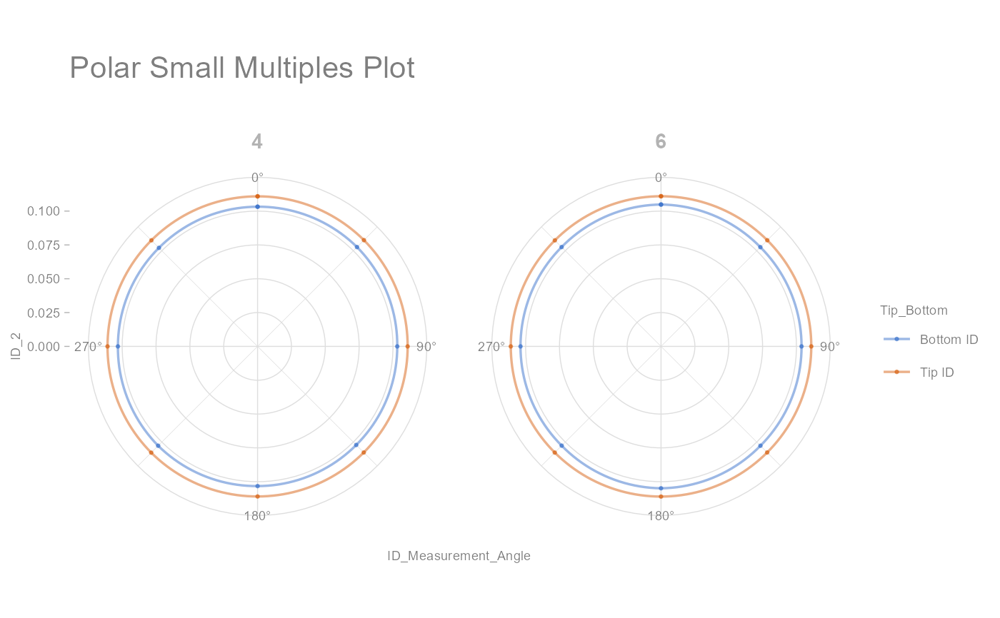

Draws a Polar Small Multiple Plot
Usage
draw_polar_small_multiples(
data,
angular_axis,
x_y_coord_axis,
grouping_var,
faceting_var_1,
faceting_var_2,
connect_with_lines = FALSE,
point_size = 2,
line_size = 0.6,
point_alpha = 0.6,
line_alpha = 0.5,
label_text_size = 11,
analysis_desc_label = ""
)Arguments
- data
input dataset to be plotted (required)
- angular_axis
angular coordinate values (required)
- x_y_coord_axis
x-y coordinate values (required)
- grouping_var
grouping variable (required)
- faceting_var_1
set first faceting variable (optional)
- faceting_var_2
set second faceting variable (optional)
- connect_with_lines
logical. if FALSE, default, values within each group are not connected with a line (optional)
- point_size
Set point size. By default, it is set to 2 (optional)
- line_size
Set line size. By default, it is set to 0.6 (optional)
- point_alpha
Set point transparency. By default, it is set to 0.6 (optional)
- line_alpha
Set line transparency. By default, it is set to 0.5 (optional)
- label_text_size
Size of text for labels. By default, it is set to 11 (optional)
- analysis_desc_label
Label (subtitle) for analysis description. By default, it is set to NULL (optional)
Examples
library(dplyr)
polar_small_multiples_data %>%
filter(Mold_Cavity_Number %in% c(4, 6)) %>%
draw_polar_small_multiples(angular_axis = ID_Measurement_Angle,
x_y_coord_axis = ID_2,
grouping_var = Tip_Bottom,
faceting_var_1 = Mold_Cavity_Number,
point_size = 0.5,
connect_with_lines = TRUE,
label_text_size = 7)
